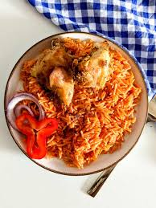
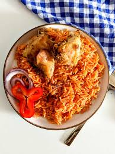

West African Rice Dish Loved Accross Homes
 

A West African dish of rice cooked in a sauce of tomatoes and onions seasoned usually with
garlic, thyme, hot pepper, and other spices and often accompanied by meat, fish, or vegetables
jollof rice, one of West Africa's beloved dishes and a common meal across Nigeria.
Jollof rice
unites nearly all of West Africa, with perhaps Nigeria and Ghana being the two countries best known for it. It is to West Africa what jambalaya is to Louisiana: a dish that is not just food but
a cultural emblem.
Jollof rice is a one-pot rice dish consisting of fried and stewed tomatoes as
its flavor base. The rice is a deep red in color once finished, and can either be served as an
accompaniment to other Nigerian dishes or on its own alongside some plantains.
Jollof Rice is so popular across Africa that it has even sparked a friendly rivalry known as
the “Jollof Wars,” where countries debate over who makes the best version. Nigerian Jollof
is famous for its rich flavor, deep color, and slight smoky taste from steaming the rice.
Whether you are enjoying it with fried plantain, grilled chicken, or salad, Jollof Rice is
a meal that brings people together and always leaves you wanting more.
How to make Nigerian Jollof Rice